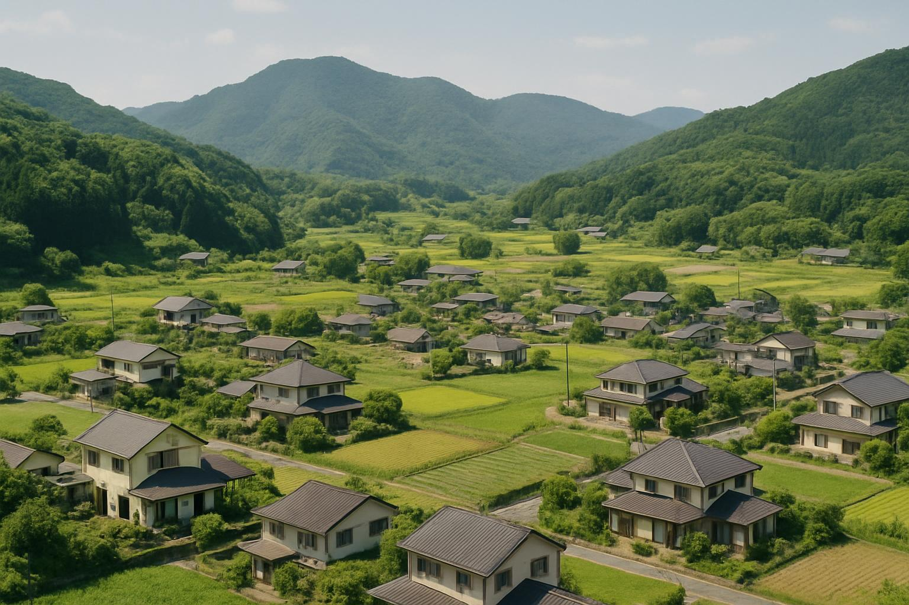

← コラム一覧に戻る

エリアによって、空き家の使い道や相談内容には一定の傾向があります
「鹿児島市内なら相談先も多いけれど、うちは霧島市（または薩摩川内市・姶良市）だから事情が違うのでは」というお声を、空き家の相談ではよくいただきます。TAMARIEは鹿児島県内全域に対応しているからこそ見えてくる、エリアごとの空き家事情の傾向をご紹介します。
鹿児島市中心部と周辺エリアの違い
鹿児島市中心部は人口・交通の利便性から賃貸・売却の需要が比較的安定しており、駐車場や民泊といった土地活用の選択肢も豊富です。一方、周辺エリアでは敷地が広い戸建てが多く、建物としての活用より解体・土地活用のほうが現実的な選択肢になるケースも見られます。
霧島市・薩摩川内市・姶良市の空き家事情の傾向
| エリア | 傾向 |
|---|---|
| 霧島市 | 温泉地・観光エリアを中心に、民泊や別荘としての活用のご相談も見られます |
| 薩摩川内市 | 敷地が広い戸建てが多く、解体・土地活用のご相談が目立ちます |
| 姶良市 | 鹿児島市への通勤圏として、賃貸としての需要を見込みやすいエリアです |
上記はあくまで一般的な傾向であり、実際の需要や適した活用方法は、立地・建物の状態・接道状況などによって大きく変わります。
エリアが違っても、共通して大切なこと
固定資産税の負担、管理の手間、将来の相続――空き家をめぐる悩みそのものは、鹿児島市でも周辺エリアでも共通しています。違うのは「どの活用方法が現実的か」「どのくらいの需要が見込めるか」という相場観の部分です。
📌 エリアを問わず確認しておきたいこと
- 相談先が、お住まいのエリアの活用実績・相場感を把握しているか
- エリアによって対応可能な管理会社が限られていないか
- 早めに相談するほど、選べる選択肢は多く残る
TAMARIEでは、鹿児島市はもちろん、霧島市・薩摩川内市・姶良市など県内全域からのご相談に対応しており、エリアごとの相場観を踏まえたご提案をしています。
お住まいのエリアの空き家事情、聞いてみませんか？
「うちのエリアだと何が現実的なのか分からない」という段階でのご相談も歓迎です。